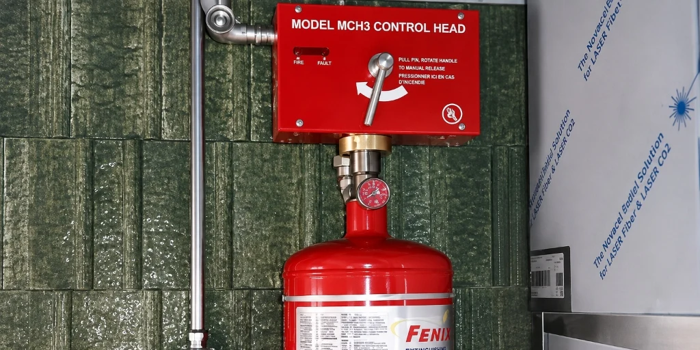
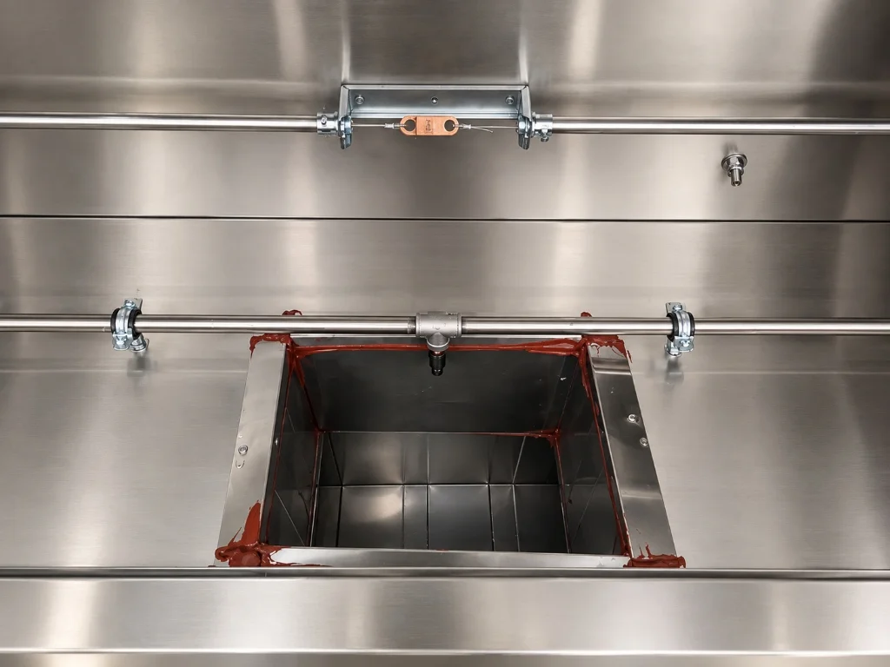

Otomatik Davlumbaz İçi
Yangın Söndürme
Sistemleri
Ticari mutfaklarda oluşabilecek yağ kaynaklı yangınlara karşı hızlı algılama ve otomatik müdahale sağlayan güvenilir çözümler sunuyoruz.

Yüksek sıcaklıkta eriyen lehimli algılayıcılarla (fusible link) anında mekanik aktivasyon.
Islak kimyasal sabunlaşma (saponification) ile F/K sınıfı kızgın yağ yangınlarını bastırma.
Mekanik gaz kesme vanası ve enerji otomasyonu ile yangının yeniden parlamasını önleme.
Mutfaklarda Kontrol Sizde
Davlumbaz yangın söndürme sistemleri; otel, restoran, yemekhane ve profesyonel yemek üretim tesislerinde pişirme yüzeyleri ve davlumbaz bacalarında meydana gelebilecek yağ yangınlarını erken aşamada kontrol altına almak üzere tasarlanmış otomatik güvenlik sistemleridir.
Yüksek sıcaklıkta çalışan fritöz, ızgara ve ocaklarda başlayan alevlenmeleri davlumbaz filtrelerine ve egzoz kanalına ulaşmadan kaynağında söndürür. Sistem eş zamanlı olarak pişirme cihazlarının ana yakıt hattındaki mekanik gaz kesme vanasını kapatır ve elektrik beslemesini keserek yangının yeniden parlamasını önler.
Fenix Yangın olarak her mutfağın pişirme cihazı yerleşimine, davlumbaz ebatlarına ve tahliye debisine uygun nozul akış katsayısı (flow number) hesaplamaları ve paslanmaz boru hatlarıyla anahtar teslim mühendislik çözümleri üretiyoruz.
Daha Fazla BilgiDavlumbaz içi ve filtre arkasındaki kalibreli eriyen lehimli algılayıcılar (fusible link) yükselen sıcaklığı tespit eder.
Gergin çelik kontrol teli serbest kalarak kontrol başlığını tetikler. Mekanik gaz kesme vanası eş zamanlı olarak kapanır.
Özel ıslak kimyasal söndürme sıvısı paslanmaz nozullardan boşalarak kızgın yağ üzerinde sabunlaşma (saponification) köpüğü oluşturur.
Alevlerin baca ve binaya sıçraması önlenir, oksijen teması kesilerek alan hızla soğutulur ve kontrol altına alınır.
Başlıca Avantajlar
- Yağ kaynaklı (F/K sınıfı) yangınlara saniyeler içinde otomatik müdahale
- Elektrik kesintisinde dahi çalışan güvenilir mekanik kontrol mimarisi
- Eş zamanlı mekanik gaz kesme ve enerji kapatma otomasyonu
- Paslanmaz çelik borulama, korumalı nozullar ve kolay temizlenen kimyasal ajan
- Profesyonel montaj, 6 aylık periyodik bakım ve işletme sürekliliği desteği
Gerçek Projelerimizden

Pişirme hattı genel yerleşimi ve davlumbaz tavanı nozul dağılımı

Filtre arkası fusible link dedektörleri ve paslanmaz püskürtme nozulları
Mekanik tetikleme ünitesi ve basınçlı ıslak kimyasal tüp montajı
Uzman ekibimiz, ihtiyaçlarınıza en uygun çözümü sunmak için hazır.